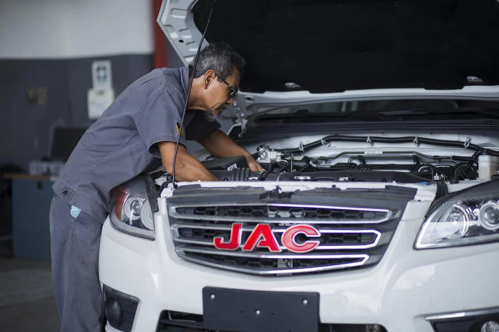
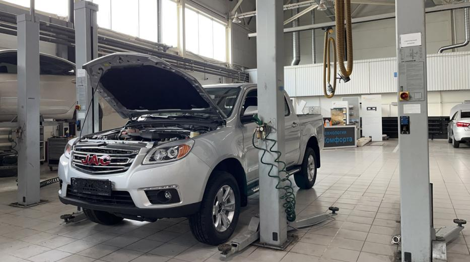
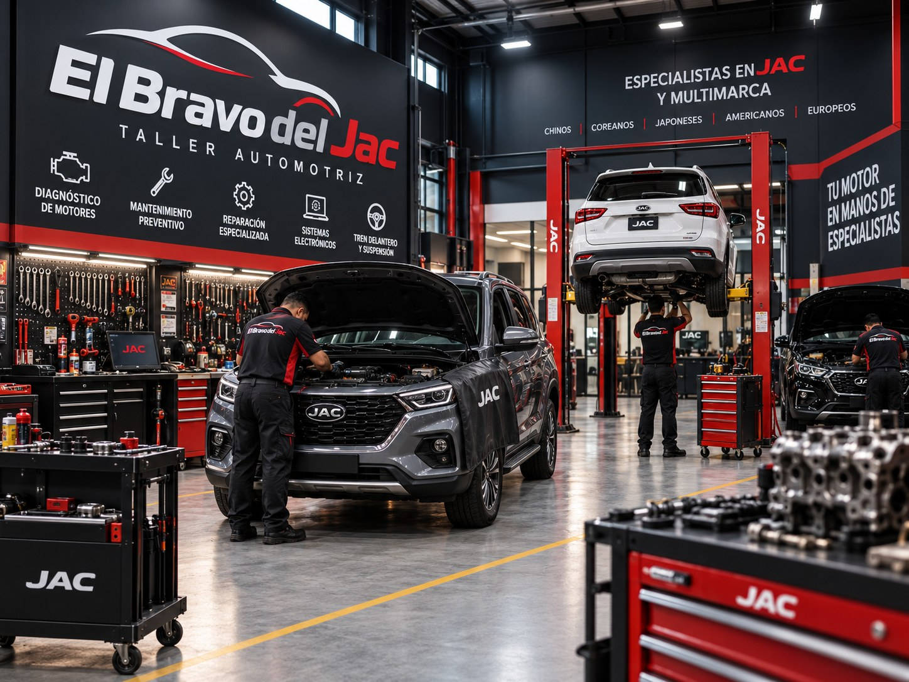
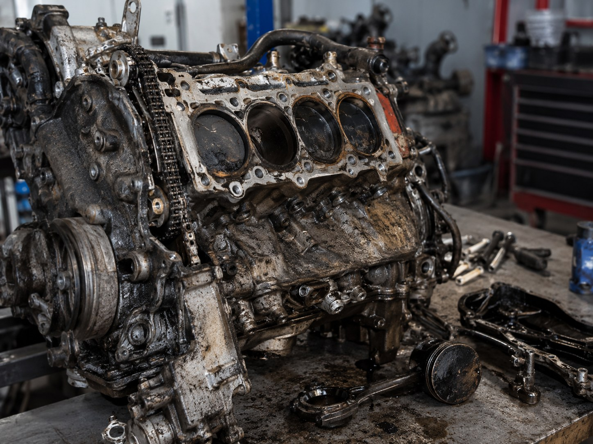
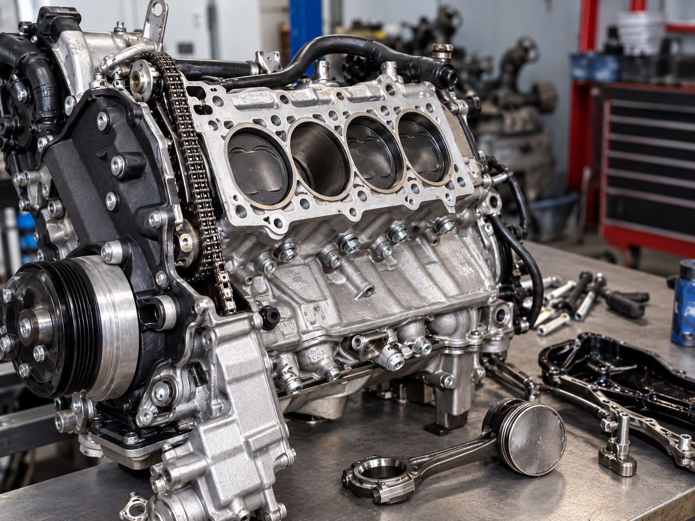
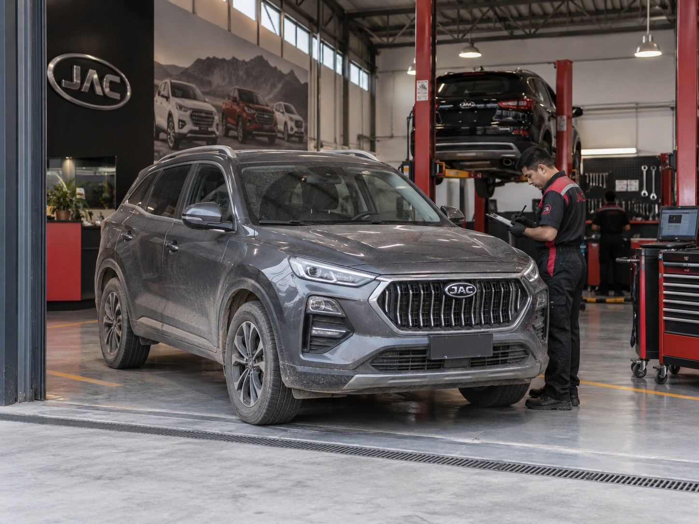

Reparación de motor
Reparación completa de motor: culata, empaques, kit de distribución, bloque y componentes internos, con pruebas de funcionamiento antes de la entrega.

Especialistas en JAC · chinos · coreanos · japoneses · multimarca
Diagnóstico, reparación y mantenimiento especializado de motores para vehículos JAC y de cualquier marca.
Del diagnóstico inicial a la reparación final. Trabajamos cada sistema del motor con el mismo criterio técnico, sin importar la marca.
Reparación completa de motor: culata, empaques, kit de distribución, bloque y componentes internos, con pruebas de funcionamiento antes de la entrega.
Escaneo computarizado para identificar fallas de motor, sensores y sistema de inyección antes de intervenir, con explicación clara del resultado.
Especialidad del taller
Conocemos sus motores, sistemas y fallas más frecuentes. Realizamos diagnóstico, mantenimiento y reparación especializada para toda la línea JAC.

También atendemos vehículos chinos, coreanos, japoneses, americanos y europeos.
La experiencia con JAC se traduce en criterio técnico para cualquier procedencia. Atendemos motores de origen:
No necesitas saber el nombre técnico de la falla. Cuéntanos qué sientes y lo revisamos.
Un proceso ordenado, del ingreso a la entrega.
Registramos el motivo de ingreso y el historial que nos compartas.
Revisión y escaneo del motor para identificar el origen real de la falla.
Con lenguaje claro, sin tecnicismos innecesarios.
Qué se va a reparar y por qué, antes de iniciar el trabajo.
Intervención especializada sobre el sistema afectado.
Verificamos que la falla haya quedado resuelta.
Te devolvemos el vehículo con indicaciones para su cuidado.

Sobre nosotros
Somos un taller automotriz enfocado en diagnóstico, mantenimiento y reparación de motores. Nuestra experiencia con vehículos JAC y diferentes marcas nos permite encontrar soluciones eficientes para distintos tipos de fallas.
Un vistazo al día a día: motores, herramientas, vehículos y diagnóstico.
Espacio preparado para mostrar resultados reales de reparación.



La confianza de nuestros clientes es nuestra mejor garantía.
“Antes de llegar a El Bravo del Jac ya había llevado mi carro a varios talleres y nadie encontraba bien la falla. Acá se tomaron el tiempo de revisarlo, me explicaron qué tenía y finalmente pudieron solucionarlo. Me fui bastante tranquilo porque por fin quedó bien.”
“Muy buena atención. Pensé que la reparación iba a demorar bastante, pero trabajaron rápido y el carro quedó muy bien. También me pareció justo el precio para todo lo que hicieron. Sin duda volvería si necesito otra revisión.”
“Vine desde provincia porque me recomendaron el taller y realmente valió la pena el viaje. Desde que llegué me atendieron con bastante paciencia, revisaron el vehículo y me fueron explicando lo que iban encontrando. Agradezco mucho la atención personalizada y el trato que tuvieron conmigo.”
Por qué elegirnos
No. JAC es una de nuestras especialidades, pero también atendemos vehículos chinos, coreanos, japoneses, americanos y europeos.
Trabajamos con vehículos de distintas marcas y procedencias, con foco en motor y mecánica automotriz en general.
Sí. El diagnóstico es el primer paso antes de cualquier reparación, para identificar el origen real de la falla.
Sí, es uno de los motivos de ingreso más comunes. Realizamos el escaneo correspondiente para identificar la causa.
Sí, además del mantenimiento correctivo, ofrecemos mantenimiento preventivo para reducir fallas futuras.
Puedes completar el formulario de contacto con los datos de tu vehículo y nos comunicaremos contigo.
Cuéntanos qué le pasa a tu vehículo y coordinamos la revisión.